건축산업기사 (2011-03-20 기출문제)
1과목: 건축계획
1. 다음과 같은 조건에서 요구되는 주택 침실의 최소 넓이는?
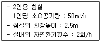
- 10m2
- 20m2
- 30m2
- 50m2
(정답률: 84%)

2. 다음 중 고층 사무소에 코어 시스템의 도입 효과와 가장 거리가 먼 것은?
- 설비의 집약
- 구조적인 이점
- 유효면적의 증가
- 독립성의 보장
(정답률: 69%)
3. 도서관 출납시스템에 대한 설명 중 옳지 않은 것은?
- 반개가식은 출납시설이 필요하다.
- 폐가식은 대출절차가 복잡하고 관원의 작업량이 많다.
- 자유 개가식은 책의 내용 파악 및 선택이 자유롭고 용이하다.
- 안전 개가식은 서가열람이 불가능하여 대출한 책이 희망한 내용이 아닐 수 있다.
(정답률: 75%)
4. 다음 중 상점내의 진열케이스 배치계획에 있어서 가장 고려하여야 할 사항은?
- 동선
- 조명의 조도
- 천장의 높이
- 바닥면의 질감
(정답률: 88%)
5. 다음과 같은 특징을 갖는 학교운영방식은?
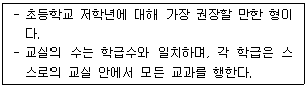
- 종합교실형
- 교과교실형
- 플래툰형
- 달톤형
(정답률: 87%)
6. 다음의 백화점 에스켈레이터 배치방식 중 매장에 대한 고객의 시야가 가장 제한되는 방식은?
- 직렬식
- 병렬단속식
- 병렬연속식
- 교차식
(정답률: 71%)
7. 오피스 랜드스케이핑(office landscaping)에 관한 설명 중 옳지 않은 것은?
- 커뮤니케이션의 융통성이 있고, 장애요인이 거의 없다.
- 배치는 의사전달과 작업흐름의 실제적 패턴에 기초를 둔다.
- 실내에 고정된 칸막이나 반고정된 칸막이를 사용하도록 한다.
- 바닥을 카펫으로 깔고, 천장에 방음장치를 하는 등의 소음대책이 필요하다.
(정답률: 72%)
8. 공장건축의 형식 중 분관식(Pavillion type)에 대한 설명으로 옳지 않은 것은?
- 통풍, 채광에 불리하다.
- 배수, 물홈통 설치가 용이하다.
- 공장의 신설, 확장이 비교적 용이하다.
- 건물마다 건축형식, 구조를 각기 다르게 할 수 있다.
(정답률: 77%)
9. 상점의 판매형식에 대한 설명 중 옳지 않은 것은?
- 대면판매는 진열면적이 감소된다는 단점이 있다.
- 측면판매는 판매원의 정위치를 정하기 어렵고 불안정하다.
- 측면판매는 상품의 설명이나 포장 등이 불편하다는 단점이 있다.
- 대면판매는 상품이 손에 잡혀서 충동적 구매와 선택이 용이하다.
(정답률: 78%)
10. 사무소 건축에 있어서 연면적에 대한 임대면적의 비율로서 가장 적당한 것은?
- 40~50%
- 50~60%
- 70~75%
- 80~85%
(정답률: 73%)
11. 상정의 정면(facade) 구성에 요구되는 5가지 광고요소 (AIDMA 법칙)에 속하지 않는 것은?
- 주의(Attention)
- 행동(Action)
- 결정(Decision)
- 기억(Memory)
(정답률: 78%)
12. 어느 학교의 1주간 평균수업시간이 36시간이고, 미술교실이 사용되는 시간이 18시간이며, 그 중 6시간이 영어 수업에 사용된다. 미술교실의 이용율과 순수율은?
- 이용률 50%, 순수율 67%
- 이용률 50%, 순수율 33%
- 이용률 67%, 순수율 50%
- 이용률 67%, 순수율 33%
(정답률: 66%)
13. 주택의 침실계획에 관한 설명 중 옳지 않은 것은?
- 침실의 출입문을 열었을 때 직접 침대가 보이지 않게 하고 출입문은 안여닫이로 한다.
- 아동침실은 정신적으로나 육체적인 발육에 지장을 주지 않도록 안전성 확보에 비중을 둔다.
- 노인실은 다른 가족들과 생활주기가 크게 다르므로 공동생활영역에서 완전히 독립 배치시키는 것이 좋다.
- 객용침실은 소규모 주택에서는 고려하지 않아도 되며 소파베드 등을 이용해서 처리한다.
(정답률: 86%)
14. 승강기 배치에 관한 설명 중 옳지 않은 것은?
- 승강기를 직렬로 배치할 경우 4대를 한도로 한다.
- 승강기가 5대 이상일 때는 알코브형 배치를 고려한다.
- 알코브형 배치는 8대 정도를 한도로 하고 그 이상일 경우 군별로 분할하는 것을 고려한다.
- 승강기의 출발층은 승강기의 효율적 운영을 위하여 여러 개소로 분산시키는 것이 좋다.
(정답률: 75%)
15. 아파트의 형식 중 홀형에 대한 설명으로 옳은 것은?
- 각 주호의 독립성을 높일 수 있다.
- 기계적 환경조절이 반드시 필요한 형이다.
- 도심지 독신자 아파트에 가장 많이 이용된다.
- 대지에 대한 건물의 이용도가 가장 높은 형식이다.
(정답률: 71%)
16. 경사지 이용에 적절한 형식으로 각 주호마다 전용의 정원을 갖는 주택 형식은?
- 타운 하우스(town house)
- 로 하우스(row house)
- 중정형 주택(patio house)
- 테라스 하우스(terrace house)
(정답률: 74%)
17. 실내공간의 동선계획에 대한 설명 중 옳지 않은 것은?
- 동선의 빈도가 크면 가능한 한 직선적인 동선처리를 한다.
- 모든 실내공간의 동선은, 특히 상점의 고객 동선은 짧게 처리하는 것이 좋다.
- 주택의 경우 가사노동의 동선은 되도록 남쪽에 오도록 하고 짧게 하는 것이 좋다.
- 주택에서 개인, 사회, 가사노동권의 3개 동선은 서로 분리되어 간섭이 없어야 한다.
(정답률: 77%)
18. 공동주택의 단면형식 중 메조넷형에 대한 설명으로 옳지 않은 것은?
- 채광 및 통풍이 유리하다.
- 작은 규모의 주택에 적합하다.
- 주택 내의 공간의 변화가 있다.
- 거주성, 특히 프라이버시가 높다.
(정답률: 69%)
19. 사무소 건축의 실단위 계획 중 개방식 배치에 대한 설명으로 옳지 않은 것은?
- 전면적을 유용하게 이용할 수 있다.
- 개실시스템에 비해 공사비가 저렴하다.
- 자연채광에 보조채광으로서의 인공채광이 필요하다.
- 개실시스템에 비해 독립성과 쾌적감의 이점이 있다.
(정답률: 73%)
20. 공장건축의 레이아웃 형식 중 다품종 소량생산이나 주문생산에 가장 적합한 것은?
- 제품중심의 레이아웃
- 공정중심의 레이아웃
- 고정식 레이아웃
- 혼성식 레이아웃
(정답률: 72%)
2과목: 건축시공
21. 다음 중 콘크리트의 크리프 변형이 크게 발생하는 경우에 해당하지 않는 것은?
- 응력이 클수록
- 물-시멘트비가 클수록
- 습도가 낮을수록
- 부재의 치수가 클수록
(정답률: 47%)
22. 철골공사의 용접에서 용접이 잘못된 부분을 수정하기 위해 사용되는 방법으로 아크의 고온열로 모재를 순간적으로 녹이고 동시에 압축공기의 강한 바람으로 용해된 금속을 불어내는 것을 무엇이라 하는가?
- 스터드 용접
- 가우징
- 서브머지드 아크
- 일렉트로 슬래그
(정답률: 61%)
23. 목구조에서 이음과 맞춤에 관한 설명 중 옳은 것은?
- 이음이란 부재와 부재가 서로 직각으로 접합되는 것을 말한다.
- 이음과 맞춤의 위치는 응력이 큰 곳에 설치한다.
- 베개 이음은 수직재 위에 칸막이 도리를 걸고 그 위에서 잇는 것이다.
- 도리, 중도리 등 휨을 받는 재의 이음은 은장이음으로 한다.
(정답률: 36%)
24. 다음 중 콘크리트 배합설계 시 사용되는 양을 용적계산에 포함시켜야 하는 혼화재료는?
- AE제
- 지연제
- 감수제
- 포졸란
(정답률: 66%)
25. 건설원가의 구성체계에서 직접공사비를 구성하는 주요 요소와 가장 거리가 먼 것은?
- 자재비
- 노무비
- 외주비
- 현장관리비
(정답률: 79%)
26. 철골구조물에서 쉐어커넥터(Shear Connector)가 사용되는 부분은?
- 기둥과 보
- 보와 보
- 바닥판과 보
- 기둥과 기초
(정답률: 48%)
27. 외부벽의 방습, 방열, 방음 등을 위해서 실시하는 벽돌쌓기 방법은?
- 내쌓기
- 영롱쌓기
- 공간쌓기
- 엇모쌓기
(정답률: 73%)
28. 미장공사 중 인조석 바르기와 테라조 바르기에 대한 내용으로 옳지 않은 것은?
- 두가지 방법 모두 종석과 모르타르를 배합하여 석재와 같은 분위기의 미장면을 완성한다.
- 테라조 갈기는 주로 백시멘트에 증석을 반죽하여 바르고 숫돌로 갈아내는 방법으로 시공한다.
- 테라조 바르기는 인조석 바르기보다 소형의 종석을 쓴다.
- 인조석 갈기는 정벌바름한 후 시멘트경화 정도를 판단하여 숫돌로 갈고 다시 시멘트 페이스트를 바르고 갈아주기를 반복한다.
(정답률: 59%)
29. 다음 중 창호공사에 쓰이는 철물이 아닌 것은?
- 플로어 힌지(floor hinge)
- 피봇 힌지(pivot hinge)
- 개폐순위 조정기
- 메탈 라스(metal lath)
(정답률: 69%)
30. 슬럼프 콘에 있어서 슬럼프 시험의 결과가 다음 그림과 같이 되었다면 슬럼프 값은?
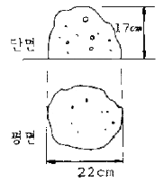
- 8 cm
- 13 cm
- 17 cm
- 22 cm
(정답률: 63%)
31. 다음 중 두장의 유리를 탄성율이 높은 유기접착필름으로 붙이고 가압·가열하여 하나의 판유리로 만든 것은?
- 망입유리
- 접합유리
- 복층유리
- 로이유리
(정답률: 54%)
32. 건축공사 도급 방식에서 정액도급의 단점이 아닌것은?
- 공사 중 설계변경을 할 경우 분쟁이 일어나기 쉽다.
- 입찰전에 도면, 시방서 작성에 시간이 걸린다.
- 발주자와 수급자 사이에 공사의 질에 대한 이해가 서로 일치하지 않을 수 있다.
- 공사완공까지의 총공사비를 예측하기 어렵다.
(정답률: 64%)
33. 거푸집공사에서 사용되는 트레블링 폼(travelingform)에 대한 설명으로 옳지 않은 것은?
- 거푸집을 이동시키면서 콘크리트를 연속적으로 타설한다.
- 공기단축이 가능하며 시공정밀도가 우수하다.
- 수평적으로 연속된 구조물에 적용한다.
- 초기 투자비가 적게 들어 경제적이다.
(정답률: 60%)
34. 다음 중 콘크리트 펌프(Concrete pump)에 관한 설명으로 옳지 않은 것은?
- 압송관의 지름 및 배관의 경로는 굵은골재의 최대치수, 콘크리트의 종류 등을 고려하여 정한다.
- 콘크리트 펌프의 기종은 압송능력이 펌프에 걸리는 최대압송부하보다 작아지도록 선정한다.
- 압송은 계획에 따라 연속적으로 실시하며, 가능한한 중단되지 않도록 하여야 한다.
- 압송방법에는 피스톤식과 스퀴즈식(Squeeze outtype)이 있다.
(정답률: 69%)
35. 회반죽 바름에서 균열을 방지하기 위한 공법 중 옳지 않은 것은?
- 정벌은 두껍게 바르는 것이 균열방지에 좋다.
- 초벌·재벌에는 거친모래를 넣는다.
- 초벌·재벌·정벌에는 적당량의 여물을 넣는다.
- 졸대는 두꺼운 것이 좋고 수염은 충분히 넣는다.
(정답률: 64%)
36. 다음 중 거푸집 측압에 영향을 주는 요소로 가장 거리가 먼 것은?
- 거푸집 표면의 평활도
- 콘크리트 타설 속도
- 시멘트의 종류
- 철근의 종류
(정답률: 66%)
37. 다음 중 건설업의 종합건설업(EC화 : Engineering construction)에 대한 설명 중 가장 적합한 것은?
- 종래의 단순한 시공업과 비교하여 건설사업의 발굴 및 기획, 설계, 시공, 유지관리에 이르기까지 사업 전반에 관한 것을 종합, 기획관리하는 업무영역의 확대를 말한다.
- 각 공사별로 나누어져있는 토목, 건축, 전기, 설비, 철골, 포장 등의 공사 면허를 1개회사에서 시공하도록 하는 종합건설 면허제도이다.
- 설계업을 하는 회사를 공사시공까지 할 수 있도록 업무영역을 확대한 면허제도를 말한다.
- 시공업체가 설계업까지 할 수 있게 하는 면허제도이다.
(정답률: 78%)
38. 콘크리트 거푸집을 조기에 제거하고 단시일에 소요강도를 내기 위한 양생 방법은?
- 습윤양생
- 전기양생
- 피막양생
- 증기양생
(정답률: 67%)
39. 다음 중 골재의 각각의 요구성능에 대한 설명으로 옳지 않은 것은?
- 골재의 강도는 시멘트 페이스트 이상이 되어야 한다.
- 골재의 비중이 클수록 단위용적중량이 크다.
- 잔골재의 부피는 흡수율에 관계없이 일정하다.
- 좋은 입형의 골재는 공극률이 작아서 정육면체나 구형에 가깝다.
(정답률: 63%)
40. 표준관입시험에 대한 설명으로 옳지 않은 것은?
- 사질지반에 주로 이용한다.
- 사운딩 시험의 일종이다.
- N값이 클수록 흙의 상탠느 느슨하다고 볼 수 있다.
- 낙하시키는 추의 무게는 63.5kg이다.
(정답률: 70%)
3과목: 건축구조
41. 그림과 같은 캔틸레버 보에 대한 설명 중 옳지 않은 것은?
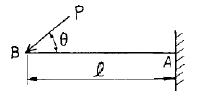
- A지점에서는 3개의 반력이 생긴다.
- A지점의 수직 반력의 방향은 상향(↑)이다.
- A지점의 모멘트 반력의 방향은 시계방향( )이다.
- (A - B)부재 내부는 압축응력만 발생한다.
(정답률: 45%)
42. 기초의 부동침하를 방지하는데 적절하지 않은 조치는?
- 구조물 전체의 하중을 기초에 균등히 분포시킨다.
- 말뚝 또는 피어기초를 고려한다.
- 기초 상호간을 강(Rigid)접합으로 연결을 한다.
- 한 건물에서의 기초 설치 시 가급적 다른 종류의 기초로 한다.
(정답률: 75%)
43. 그림과 같은 겔버보에서 B지점의 반력은?
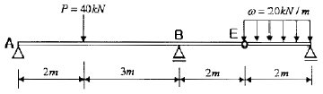
- 34 kN
- 44 kN
- 54 kN
- 64 kN
(정답률: 39%)
44. 단면의 성질계수와 용도를 연결한 것 중 서로 가장 거리가 먼 것은?
- 단면1차모멘트 - 단면의 도심
- 단면2차모멘트 - 처짐
- 단면2차반경 - 단면의 주축
- 단면계수 - 휨응력
(정답률: 47%)
45. 철근콘크리트구조의 철근 이음에 관한 설명 중 옳지 않은 것은?
- 일반적으로 D25를 초과하는 철근은 겹침이음을 하지 않아야 한다.
- 휨부재에서 서로 직접 접촉되지 않게 겹침이음된 철근은 횡방향으로 소요 겹침이음길이의 1/5 또는 150mm 중 작은값 이상 떨어지지 않아야 한다.
- 용접이음은 철근의 설계기준항복강도 fy 의 125% 이상을 발휘할 수 있는 완전용접이어야 한다.
- 기계적 이음은 철근의 설계기준항복강도 fy의 125% 이상을 발휘할 수 있는 완전 기계적 이음이어야 한다.
(정답률: 57%)
46. 다음 그림과 같은 중공형 단면의 단면계수를 구하면?
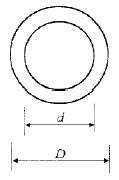
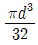
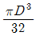
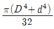
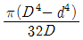
(정답률: 50%)
47. 철근콘크리트부재의 인장이형철근 및 이형철선의 정착길이는 최소 얼마이상이어야 하는가?
- 100 mm
- 150 mm
- 200 mm
- 300 mm
(정답률: 39%)
48. 철근콘크리트구조의 특징에 대한 설명 중 옳지 않은 것은?
- 철근과 콘크리트가 일체가 되어 내구적이다.
- 철근이 콘크리트에 의해 피복되므로 내화적이다.
- 다른구조에 비해 부재의 단면과 중량이 큰 편이다.
- 습식구조이므로 동절기 공사가 용이하다.
(정답률: 71%)
49. 목재의 허용압축응력도가 6MPa인 단주에서 압축력 42kN이 작용할 때 최소 필요단면적은?
- 5800 mm2
- 6200 mm2
- 6800 mm2
- 7000 mm2
(정답률: 48%)
50. 다음 중 재료의 탄성계수와 단위가 같은 것은?
- 응력
- 모멘트
- 연직하중
- 단면1차모멘트
(정답률: 46%)
51. 다음 그림과 같은 단면의 균형철근 단면적 Asb를 구하면? (단, fck = 21Mpa, fy = 300MPa)
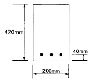
- 2364 mm2
- 2561 mm2
- 2684 mm2
- 2795 mm2
(정답률: 43%)
52. 철근콘크리트 구조로도 이용되는 H·P쉘(hyperbolic paraboloid shell)에 관한 설명으로 옳지 않은 것은?
- 면내에는 인장응력이 발생하지 않는다.
- 쌍곡포물선면으로 된 쉘이다.
- 면내 전달력에 의하여 하중을 주변 지지체에 전달할 수 있다.
- H.P곡면을 몇 개의 단위로 짜 맞추면 여러 종류의 지붕형태를 구성할 수 있다.
(정답률: 51%)
53. 내부슬래브의 주변에 보와 지판이 없는 경우 슬래브의 최소두께 산정식은 ln/33이다. 이식에서 ln으로 옳은 것은?
- 2방향슬래브의 장변의 순경간
- 2방향슬래브 장변의 기둥중심간 거리
- 2방향슬래브의 둘레길이의 합
- 2방향슬래브 단변의 기둥중심간 거리
(정답률: 47%)
54. 다음 중 철근콘크리트구조의 철근에 대한 콘크리트피복에 관한 설명으로 옳지 않은 것은?
- 화재시 철근의 빠른 가열에 의한 강도저하를 방지한다.
- 기둥과 보에서의 피복두께는 주근의 중심과 콘크리트 표면과의 최단 거리를 말한다.
- 철근과의 부착력을 확보한다.
- 철근의 부식을 방지한다.
(정답률: 66%)
55. 그림과 같은 단순보의 A지점에서의 처짐각은? (단, E : 탄성계수, I : 단면2차모멘트이다.)
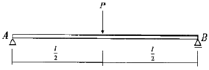
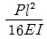
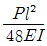
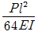
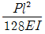
(정답률: 35%)
56. 대칭 T형보에서 보의 경간이 6m, 슬래브두께 120mm, 양쪽슬래브의 중심간 거리가 4m 일 때 보의 유효폭 값으로 옳은 것은? (단, b=300mm, d=500mm)
- 1.5 m
- 2.22 m
- 2.84 m
- 4 m
(정답률: 29%)
57. 다음 구조물의 부정정 차수는?
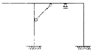
- 3차 부정정
- 4차 부정정
- 5차 부정정
- 6차 부정정
(정답률: 41%)
58. 그림과 같은 양단 고정보에서 B지점의 모멘트 MB의 값은?
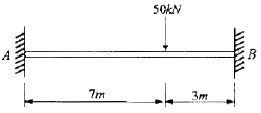
- -43.5 kN·m
- -51.5 kN·m
- -61.5 kN·m
- -73.5 kN·m
(정답률: 38%)
59. 인장 이형철근의 정착길이를 보정 계수에 의해 증가시켜야 하는 경우가 아닌 것은?
- 일반콘크리트
- 에폭시 도막철근
- 경량콘크리트
- 상부 철근
(정답률: 55%)
60. 다음 그림과 같은 단순보에서 C점의 전단력을 구하면?
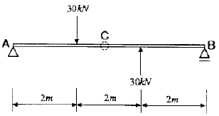
- 0
- -10kN
- -20kN
- -30kN
(정답률: 41%)
4과목: 건축설비
61. 대변기 세정수의 급수방식 중 하이 탱크식에 대한 설명으로 옳지 않은 것은?
- 볼 탭이 사용된다.
- 로 탱크식에 비해 세정소음이 크다.
- 로 탱크식에 비해 화장실 면적을 다소 넓게 사용할 수 있다.
- 일시적으로 많은 사람들이 연속하여 사용하여야 하는 극장, 백화점 등에 주로 이용된다.
(정답률: 59%)
62. 전압의 분류에서 저압은 최대 얼마 이하의 전압을 의미하는가? (단, 교류인 경우)
- 600[V]
- 700[V]
- 750[V]
- 1000[V]
(정답률: 47%)
63. 다음의 공기조화방식 중 전공기방식에 해당하지 않는 것은?
- 단일덕트방식
- 2중덕트방식
- 팬코일 유닛방식
- 멀티존 유닛방식
(정답률: 66%)
64. 배관에 있어서 2개 이상의 엘보를 사용하여 이음부의 나사 회전을 이용해서 배관의 신축을 흡수하는 신축 이음쇠는?
- 플랜지형
- 벨로우즈형
- 스위블형
- 플레어형
(정답률: 70%)
65. 진공 환수식 난방 장치에 있어서 부득이 방열기보다 높은 곳에 환수관을 배관하지 않으면 안될 때 또는 환수 주관 보다 높은 위치에 진공 펌프를 설치할 때, 환수관에 응축수를 끌어올리기 위해 사용하는 것은?
- 리프트 이음
- 볼 조인트
- 루프형 이음
- 슬리브형 이음
(정답률: 67%)
66. 위험물저장 및 처리시설에 설치하는 피뢰설비는 한국산업표준에 따른 피뢰시스템레벨이 최소 얼마 이상이어야 하는가?
- Ⅰ
- Ⅱ
- Ⅲ
- Ⅳ
(정답률: 60%)
67. 부하전류를 개폐함과 동시에 단락 및 지락사고 발생시 각종 계전기와의 조합으로 신속히 전로를 차단하여 기기 및 전선을 보호하는 장치는?
- 로우젯
- 영상 변류기
- 진상용 콘덴서
- 서킷 브레이커
(정답률: 69%)
68. 열기나 유해물질이 실내에 널리 산재되어 있거나 이동되는 경우에 급기로 실내의 전체 공기를 희석하여 배출시키는 환기 방법은?
- 집중환기
- 국소환기
- 전체환기
- 자연환기
(정답률: 58%)
69. 다음 중 실측식 가스 계량기(가스미터)에 해당하는 것은?
- 와류식
- 루츠식
- 벤투리식
- 오리피스식
(정답률: 37%)
70. 10℃의 물 1000L를 40℃의 온수로 만들기 위해 필요한 열량은? (단, 물의 비열은 4.19kJ/kg·K 이다.)
- 125.7kJ
- 1257kJ
- 12579kJ
- 125700kJ
(정답률: 46%)
71. 주위 온도가 일정한 온도상승률 이상으로 되었을 때 작동하는 것으로서 광범위한 열효과의 누적으로 작동하는 감지기는?
- 이온화식 감지기
- 정온식 스폿형 감지기
- 차동식 분포형 감지기
- 정온식 감지선형 감지기
(정답률: 61%)
72. 호텔의 주방이나 레스토랑의 주방 등에서 배출되는 세정배수 중의 유지분을 포집하기 위해 사용되는 포집기는?
- 샌드 포집기
- 가솔린 포집기
- 그리스 포집기
- 프라스터 포집기
(정답률: 76%)
73. 양수펌프의 양수량 18m3/h이고 양정이 60m일 때 펌프의 축동력은? (단, 펌프의 효율은 50% 이다.)
- 0.35kw
- 1.47kw
- 2.94kw
- 5.88kw
(정답률: 44%)
74. 금속관 공사에 관한 설명으로 옳지 않은 것은?
- 전선의 인입이 용이하다.
- 전선의 과열로 인한 화재의 위험성이 작다.
- 외부적 응력에 대해 전선보호의 신뢰성이 높다.
- 철근콘크리는 건물의 매입 배선으로는 사용할 수 없다.
(정답률: 66%)
75. 다음 중 잠열을 이용한 난방방식으로 예열시간이 짧고 간헐운전에 적합하지만 스팀 해머를 발생할 수 있는 것은?
- 온수난방
- 증기난방
- 복사난방
- 온풍난방
(정답률: 79%)
76. 조명기구를 배광에 따라 분류할 경우, 다음과 같은 특징을 갖는 것은?
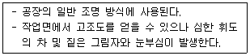
- 직접조명형
- 간접조명형
- 반간접조명형
- 전반확산조명형
(정답률: 69%)
77. 건구온도 26℃인 공기 1000m3과 건구온도 32℃인 공기 500m3를 단열혼합하였을 경우, 혼합공기의 건구온도는?
- 27℃
- 28℃
- 29℃
- 30℃
(정답률: 54%)
78. 수질 관련 용어 중 BOD란 무엇인가?
- 생물화학적 산소요구량
- 화학적 산소요구량
- 용존산소량
- 수소이온농도
(정답률: 82%)
79. 다음의 급수방식에 대한 설명 중 옳은 것은?
- 압력탱크 방식은 경제적이며 공급압력이 일정하다.
- 수도직결 방식은 공급압력이 일정하여 고층건물에 주로 사용된다.
- 탱크가 없는 부스터 방식은 정교한 제어가 필요하며 정전시 급수가 불가능하다.
- 고가수조 방식은 수질오염성이 가장 낮은 방식으로 단수시 일정 시간 동안 급수가 가능하다.
(정답률: 64%)
80. 소방대상물에 설치된 2개의 옥외소화전을 동시에 사용할 경우 각 옥외소화전의 노즐 선단에서의 방수압력은 최소 얼마 이상이어야 하는가? (단, 전동기 또는 내연기관에 따른 펌프를 이용하는 가압송수장치를 사용할 경우)
- 0.07MPa
- 0.17MPa
- 0.25MPa
- 0.34MPa
(정답률: 52%)
5과목: 건축관계법규
81. 다음 중 당해 용도에 사용되는 바닥면적의 크기와 상관없이 건축허가 신청시 에너지절약계획서를 제출하여야 하는 대상 건축물은?
- 업무시설
- 공동주택 중 기숙사
- 공동주택 중 아파트
- 교육연구시설 중 연구소
(정답률: 48%)
82. 다음 중 주요구조부를 내화구조로 하여야 하는 건축물은?
- 종교시설의 용도로 쓰는 건축물로서 집회실의 바닥면적의 합계는 180m2인 건축물
- 판매시설의 용도로 쓰는 건축물로서 그 용도로 쓰는 바닥면적의 합계가 550m2인 건축물
- 공장의 용도로 쓰는 건축물로서 그 용도로 쓰는 바닥변의 합계가 1000m2인 건축물
- 건축물의 2층이 숙박시설의 용도로 쓰는 건축물로서 그 용도로 쓰는 바닥면적의 합계가 330m2인 건축물
(정답률: 47%)
83. 길이가 25m인 막다른 도로의 너비가 최소 얼마 이상인 경우 건축법에 따른 도로로 볼 수 있는가?
- 2m
- 3m
- 4m
- 6m
(정답률: 54%)
84. 건축물의 소유자나 관리자는 건축물이 재해로 멸실된 경우 멸실 후 며칠 이내에 멸실 신고를 하여야 하는가?
- 5일
- 10일
- 15일
- 30일
(정답률: 73%)
85. 가로구역별로 건축물이 최고 높이를 지정·공고할때 고려하여야 하는 사항이 아닌 것은?
- 도시미관 및 경관계획
- 도시관리계획 등의 토지이용계획
- 해당 가로구역이 접하는 도로의 길이
- 해당 가로구역의 상·하수도 등 간선시설의 수용능력
(정답률: 52%)
86. 다음의 노외주차장의 구조 및 설비에 관한 기준 내용 중 ( )안에 알맞은 것은?
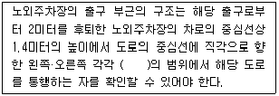
- 15도
- 30도
- 45도
- 60도
(정답률: 44%)
87. 노외주차장 내부 공간의 일산화탄소 농도는 주차장을 이용하는 차량이 가장 빈번한 시각의 앞뒤 8시간의 평균치를 최대 얼마 이하로 유지되어야 하는가? (단, 다중이용시설 등의 실내공기질관리법에 따른 실내주차장이 아닌 경우)
- 30 ppm
- 40 ppm
- 50 ppm
- 60 ppm
(정답률: 47%)
88. 비상용승강기 승강장의 바닥면적은 비상용승강기 1대에 대하여 최소 얼마 이상으로 하여야 하는가? (단, 옥내에 승강장을 설치하는 경우)
- 5m2
- 6m2
- 7m2
- 8m2
(정답률: 67%)
89. 다음 중 건축허가신청에 필요한 기본설계도에 해당되지 않는 것은?
- 시방서
- 공정표
- 실내마감도
- 토지굴착 및 옹벽도
(정답률: 54%)
90. 다음 중 노외주차장에 설치하여야 하는 차로의 최소너비가 가장 큰 주차형식은?
- 평행주차
- 60도 대향주차
- 45도 대향주차
- 교차주차
(정답률: 62%)
91. 지하식 또는 건축물식 노외주차장의 차로에 관한 기준 내용으로 옳지 않은 것은?
- 높이는 주차바닥면으로부터 2.1m 이상으로 하여야한다.
- 경사로의 종단경사도는 곡선 부분에서는 14퍼센트를 초과하여서는 아니 된다.
- 경사로의 종단경사도는 직선 부분에서는 17퍼센트를 초과하여서는 아니 된다.
- 경사로의 차로 너비는 경사로가 1차로이며 직선형인 경우 3.3m 이상으로 한다.
(정답률: 51%)
92. 다음 중 건축물의 용도별 분류관계가 옳지 않은 것은?
- 단독주택 - 다중주택
- 의료시설 - 요양병원
- 문화 및 집회시설 - 식물원
- 관광 휴게시설 - 휴양 콘도미니엄
(정답률: 42%)
93. 다음 중 건축물에 대한 구조의 안전을 확인하는 경우 건축구조기술사의 협력을 받아야 하는 건축물에 해당하지 않는 것은?
- 다중이용 건축물
- 층수가 6층인 건축물
- 기둥과 기둥 사이의 거리가 20미터인 건축물
- 한쪽 끝은 고정되고 다른 끝은 지지되지 아니한 구조로 된 차양 등이 외벽의 중심선으로부터 3미터 돌출된 건축물
(정답률: 58%)
94. 다음은 건축물의 바닥면적 산정방법에 관한 기준 내용이다. ( )안에 알맞은 것은?
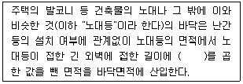
- 0.5미터
- 1.0미터
- 1.5미터
- 2.0미터
(정답률: 52%)
95. 부설주차장 설치대상 시설물의 종류별 설치기준으로 옳지 않은 것은?
- 골프장 : 1홀당 10대
- 위락시설 : 시설면적 100m2당 1대
- 판매시설 : 시설면적 100m2당 1대
- 수련시설 : 시설면적 350m2당 1대
(정답률: 72%)
96. 다음 중 건축법상 리모델링의 정의로 가장 알맞은 것은?
- 건축물의 노후화를 억제하거나 기능 향상 등을 위하여 대수선하거나 일부 증축하는 행위
- 건축물의 노후화를 억제하거나 기능 향상 등을 위하여 대수선하거나 재축하는 행위
- 건축물의 노후화를 억제하거나 기능 향상 등을 위하여 대수선하거나 개축하는 행위
- 건축물의 노후화를 억제하거나 기능 향상 등을 위하여 개축하거나 일부 증축하는 행위
(정답률: 58%)
97. 주차장에서 장애인 전용 주차단위구획의 면적은 최소 얼마 이상이어야 하는가? (단, 평행주차형식 외의 경우)
- 7.2m2
- 11.5m2
- 12m2
- 16.5m2
(정답률: 64%)
98. 주거에 쓰이는 바닥면적의 합계가 200m2인 주거용 건축물에 설치하여야 할 급수관의 최소 지름은?
- 15mm
- 20mm
- 25mm
- 32mm
(정답률: 52%)
99. 각 층의 거실 바닥면적이 3,000m2인 지하 3층 지상 10층의 숙박시설을 건축하고자 할 때, 설치하여야 하는 승용승강기의 최소 대수는? (단, 16인승 승용승강기를 설치하는 경우)
- 3대
- 4대
- 5대
- 7대
(정답률: 53%)
100. 다음 중 설치하여야 하는 대상건축물의 판단 기준이 건축물의 높이나 층수와 관계가 없는 것은?
- 배연설비
- 차면시설
- 승용승강기
- 비상용승강기
(정답률: 48%)